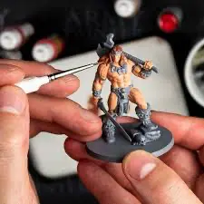
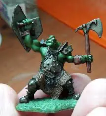
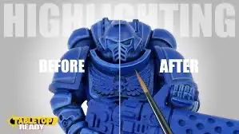
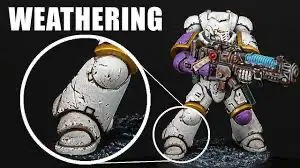
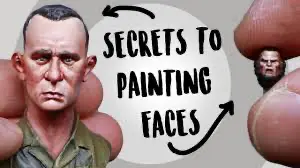
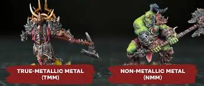

Master the Art of Miniature Painting

Beginner
Base Coating Fundamentals
Learn the essential techniques for applying clean, even base coats to your miniatures
Watch Tutorial 14:11

Intermediate
Shading & Washing techniques
Master the art of creating depth and dimension with washes and targeted shading.
Watch Tutorial 5:26

Intermediate
Edge Highlighting Mastery
Discover professional highlighting techniques to make your miniatures pop.
Watch Tutorial 12:48

Advanced
Advanced Weathering Effects
Create realistic battle damage, rust, and wear effects for veteran miniatures.
Watch Tutorial 5:22

Expert
Face Painting Techniques
Learn to paint expressive faces with proper skin tones, eyes and facial features.
Watch Tutorial 14:25

Expert
Metallics & Non-Metallis Metal
Master both metallis paints and non-metallic metal techniques for stunning armor effects.
Watch NMM Tutorial 5:51 Watch TMM Tutorial 5:37